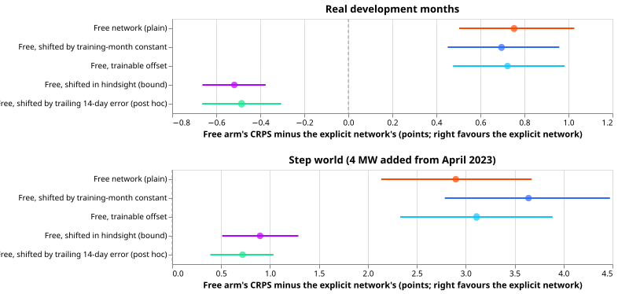
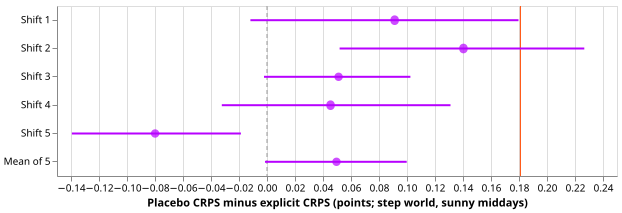

The explicit solar term beats two fixed bias corrections, but a correction from recent errors beats it
The explicit solar network beat both bias corrections that the plan fixed in advance, so the rule set in the plan says to build an ensemble-weather version. That result is not safe to act on alone. Neither pre-registered correction could see a bias that appears after training. A correction from the previous 14 days' errors, added after the results, forecast real sunny middays better than the explicit network.
We asked whether the gain of experiment 639 came from telling a demand neural network the solar capacity behind each Primary substation, or only from the plain network's sunny-midday forecast running too high. The plain network, called the free network, learns the solar response from weather alone. The explicit network is told each Primary substation's solar capacity and subtracts a physics solar curve of that capacity. Both forecast demand with the solar output netted off. Sunny middays are the half-hours from 10:00 to 15:00 UTC when the ratio of observed to clear-sky irradiance is at least 0.7. The error measure is the continuous ranked probability score (CRPS), in percentage points of each Primary substation's solar capacity, and a smaller value is better.
We scored the 60 days after each of three training cutoffs in two worlds. The real months use the recorded demand. The step world adds 4 MW of a real solar farm's output to the demand of each Primary substation from April 2023. In the real months the CRPS on sunny middays was 3.30 for the explicit network and 4.05 for the plain free network. A free network shifted by a constant fitted on training months scored 3.99, and a free network with a trainable offset scored 4.02. The explicit network beat both corrections by about 0.7 points. The smallest gain that counts (the bar, from experiment 639) is 0.067 points. A free network corrected by its own mean error over the previous 14 days (the 14-day tracker), a control added after the results, scored 2.81 and beat the explicit network by 0.48 points. The capacity-swap placebo, where each Primary substation gets another one's capacity, lost by less than its bar of 0.181 points. The hypothesis is partly supported.

Results
Both pre-registered corrections leave most of the gap. Each entry is the arm's CRPS minus the explicit network's, in points on sunny middays, so a positive value favours the explicit network. Intervals are day-block bootstraps at the 99% level (95%, Bonferroni-corrected over five contrasts). The bars are experiment 639's minimum detectable effects: 0.067 in the real months and 0.181 in the step world.
| Arm minus explicit | Real, sunny | Step, sunny |
|---|---|---|
| Free network (plain) | +0.75 [0.50, 1.03] | +2.90 [2.14, 3.67] |
| Free, shifted by a training-month constant (C1, C3) | +0.70 [0.45, 0.96] | +3.64 [2.79, 4.47] |
| Free, trainable sunny-midday offset (C2, C4) | +0.72 [0.48, 0.98] | +3.11 [2.33, 3.89] |
| Free, shifted in hindsight by the test window's own error (bound) | -0.52 [-0.66, -0.38] | +0.90 [0.51, 1.29] |
| Free, 14-day tracker (post hoc) | -0.48 [-0.66, -0.30] | +0.72 [0.39, 1.03] |
Absolute CRPS on sunny middays, real months then step world: explicit 3.30 and 6.09; plain free 4.05 and 8.99; training-month constant 3.99 and 9.73; trainable offset 4.02 and 9.20; hindsight shift 2.78 and 6.99; 14-day tracker 2.81 and 6.81. On all half-hours in the real months the two pre-registered corrections lose to the explicit network by +0.13 [0.07, 0.18] and +0.14 [0.09, 0.20].
- C1 and C2 hold, and the plan's rule is met. The explicit network beats both corrections in the real months by about 10 times the bar. The rule fixed in the plan recommends building the ensemble-weather version and naming its cost. The cost is a new row builder with forecast leads, a probe and capacity table per cutoff, and a refit per lead band, which is more than the experiment 639 pipeline's roughly 1.8 GPU-hours. The Checks section gives reasons not to act on that recommendation yet, and the maintainer decides.
- The gain was larger than predicted. The plan predicted 0.3 to 0.6 points and expected the hindsight shift to close most of the gap. The observed gains are 0.70 and 0.72, and the hindsight shift beats the explicit network by 0.52.
- C3 and C4 (no bar). In the step world the training-month constant makes the free network worse than the plain one: its gap to the explicit network is 3.64 against 2.90 for the plain network, a difference of 0.74.
- C5, the placebo, is decided: below the bar. The mean over five permutations of the capacity timelines loses to the explicit network by +0.05 [-0.00, +0.10], and the upper end is under 0.181. The five shifts give +0.09, +0.14, +0.05, +0.05, and -0.08. The placebo does not support the claim that each Primary substation's own capacity matters.

Red line: the 0.181 bar. Dashed line: zero.
Checks
- Neither pre-registered correction can see the bias. The free network's sunny-midday median forecast runs too high by +4.1 points of capacity in the real months and +8.3 in the step world. The constants fitted on the held-out training weeks are -0.6 to +1.4 points (real) and -5.6 to +0.5 (step), because the network was chosen on those weeks. The training-month constant moves the real-months bias only from +4.11 to +3.84, and the step-world bias from +8.30 to +10.16. The learned offsets of the trainable-offset network are 0.016 to 0.085 MW, close to zero. The explicit network's bias is +0.61 points (real) and -0.87 points (step).
- The bias appears after training. The hindsight shift (fitted on the test window) and the 14-day tracker (fitted only on earlier days of the window) both beat the explicit network in the real months, by 0.52 and 0.48. The tracker scores 2.81, beside 2.78 for the hindsight shift. The tracker is a post hoc control: it was added after the audit found that the pre-registered controls could not see the bias. It is unaudited, it has no pre-registered bar, and it uses power observed on the previous days of the window, which a forecast made 1 to 10 days ahead may lack.
- The step-world comparison favours the explicit network by construction. A tracker with a 14-day window adjusts slowly to the injected 4 MW step, so the explicit network's +0.72 lead over the tracker there does not show that the capacity table or the probe adds value.
- One Primary substation carries the real-world gain. By Primary substation, the training-month constant minus the explicit network is -0.43, -0.31, +3.31, +0.78, +0.36, and +0.34. Without the Primary substation at +3.31, C1 is +0.14 [-0.03, +0.33], which is not a gain, and C2 is +0.25 [0.07, 0.45]. Two Primary substations score better with the free network. By cutoff, C1 is +0.75, +0.85, and +0.24.
- Why the placebo is weak. The injected 4 MW is the same at every Primary substation, and the probed step is 3.1 to 3.8 MW, so swapping timelines changes at most about 0.7 MW of about 3.4. Falling below the 0.181 bar does not show that each Primary substation's own capacity is irrelevant. A placebo with capacities scaled by 0.5 and 1.5 would decide that.
- Error of the median forecast beside CRPS. The mean absolute error of the median forecast on sunny middays, real months then step world, is 4.44 and 8.37 for the explicit network, 5.81 and 11.74 for the plain free network, 5.73 and 12.97 for the training-month constant, and 5.76 and 12.13 for the trainable offset. The direction matches the CRPS. The median minus the approximate mean (from the 11 quantiles) is -0.17, -0.17, -0.15, and +0.02 points in the real months for the plain free network, the constant, the offset, and the explicit network, and -4.30, -4.30, -4.22, and -0.38 in the step world.
- Triggers and audit. An audit ran (private report
e643_audit_report.md), because the capacity-swap placebo did not lose and because a later experiment's design depends on the sign. The audit re-derived the CRPS of the explicit network, the plain free network, and both pre-registered controls, the contrasts C1 to C5, and a leave-one-Primary-out table, with its own code. It found no lookahead in the rows, and did not examine the hindsight shift or the 14-day tracker. Triage:- Accepted: the pre-registered controls cannot see a bias that appears after training, so the page states it and adds the 14-day tracker, labelled post hoc.
- Accepted: the placebo is weak by construction, and one Primary substation carries the real-world gain. Both are stated above.
- Not applied: a placebo with scaled capacities. It belongs to the next experiment.
- Not checked here: whether the probes behind the capacity parameters read only data before the cutoff. Experiment 639's audit covered that.
- Fits. Only stage 1 ran, because the placebo was decided: 30 trainable-offset fits and 60 permutation fits. A code review before the first fit found that the offset could never leave zero under experiment 639's floor at zero, and the fix is in place.
Limits
- Recorded weather, not forecasts, and no lead. The weather is ERA5 and CAMS at the valid time, so the 1 to 10 day range that the network operator (NGED) cares about is untested, as in experiment 639.
- The 14-day tracker is a hindcast. In the first days of each window it has fewer than 14 days of errors, and its use in production needs the previous days' metered power at forecast time.
- Three cutoffs. The windows are 60, 60, and 30 days starting at the cutoffs, with 4,397 sunny rows pooled over six Primary substations.
- The recommendation. The rule fixed in the plan recommends the ensemble-weather version. The post hoc tracker and the one-Primary dependence argue for testing the tracker first. That departs from the rule, so the maintainer decides.
- Not reported. Stage 2, because the placebo was decided.
What the next experiment should answer
Does the explicit solar term beat a 14-day tracker once the weather is an ensemble forecast, and does a placebo with wrong capacities of a size that matters lose? Add the tracker, with and without an explicit curve, to the step world and the real months, and give each Primary substation a capacity scaled by 0.5 and 1.5 as the placebo.
Plan (pre-registered)
Written before any result existed. The trailing 14-day tracker was added afterwards and is not part of it.
We ask whether a demand neural network that is told a Primary substation's solar capacity forecasts sunny middays better than a network that learns the solar response from irradiance, or whether the gain of experiment 639 is only that the free network's sunny-midday forecast runs too high. We give the free network two bias corrections that use no capacity information, and compare the explicit network with each.
Arms
All networks, rows, cutoffs, worlds, and seeds are experiment 639's. The free and explicit networks are read from its stored weights and quantiles. Only the arms below are new.
fbias: a constant fitted on training months. For each free network (cutoff, world, seed) and each of the six Primaries, take the mean of the median forecast's error (forecast minus actual) on the sunny-midday rows of the held-out weeks of the training data, and subtract that from every quantile of the network's sunny-midday test forecasts. The held-out weeks are the early-stopping rows, which the network did not fit directly.foff: a trainable sunny-midday offset. Train a new free network (experiment 639's loop,train_explicit) on the targety + delta_p * inc * s, wheresis 1 on sunny middays and 0 elsewhere, anddelta_pis a trainable offset in megawatts for each of the six Primaries (six parameters, the same number as the explicit term's offset, with the same prior of 0.25 MW). At forecast time subtractdelta_p * inc * s. This is the explicit network with no physics curve, no capacity table, and no probed capacity.fhind: the hindsight bound (not eligible for the decision). Shift each free network's sunny-midday forecast by its own mean median error on the test window, per cutoff and Primary. Experiment 639 computed this once on the pooled rows; here it is a per-arm score with an interval.permshifts 1 to 5. The explicit network with the capacity timelines of the six Primaries cyclically shifted by one to five places (experiment 639 used two). Shift 3 swaps three pairs. Capacity parameters are experiment 639'scalparameters, rearranged as in itspermarm.
Contrasts
- C1:
fbiasminuscal, real world, sunny middays. C2:foffminuscal, same rows. - C3, C4: the same two contrasts in the step world (4 MW added from 2023-04-01).
- C5: the mean over shifts of
permminuscal, step world. - Also reported, without a bar:
freeminuscal(to reproduce experiment 639),fhindminuscal, each contrast on all half-hours, and the median forecast minus the mean forecast.
Standing practices followed and departed from
- Followed: cleaned data, the D15 and D18 cut, saved weights, reuse of stored networks and predictions, a paired contrast on identical rows, five seeds, development months only, anonymised generators (farms A to F by letter), CAMS and ERA5 weather only, six MW Primaries only.
- Departed from: monthly refits (one fit per cutoff, as in experiments 634 and 639); the load-shift slices (no event is injected); the screen on four test months (three cutoffs); the forecast-example plots (recorded weather has no lead, so one example week is shown).
- Earlier advice followed: the shifted-free-network control and a placebo with an MDE below the expected loss (both from experiment 639's advice).
Review order
A fresh Sonnet agent reviews the code before the first fit. A fresh Sonnet agent checks the write-up
against the printed report, and a second runs the prose review. An audit follows if a trigger in the
ml-experiment skill fires.